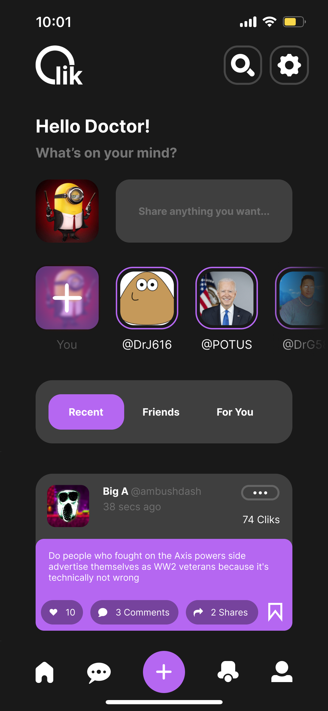

|  |
|---|
| A screenshot from the developer build which contains RSE-052. Note that RSE-052-1 is not present in this image |
RSE-052 is a previously hidden and now disabled subscription service to the highly popular Grushian social media app ClikClak. RSE-052 was added as a feature to the app on November 9, 2022, with a fee of 7.99 USD per month. Upon purchasing, users are redirected to an alternate site, classified RSE-052-1, and are unable to return to the primary version of the app unless RSE-052’s service is canceled.
RSE-052-1 is almost identical to the original app, but unintentionally serves exclusively as a subscription to only view posts from British television host James Corden, who is given the designation RSE-052-2. It is unknown if RSE-052-2 is posting directly to the user, as most posts by the subject are incredibly vague.
RSE-052 can be found on a developer build of ClikClak on Dr. Wood’s old cell phone, located in the Anomalous Object Hall of Location 01. Any other evidence of RSE-052’s existence was terminated on November 11, 2022. Posts, articles, or videos referring to RSE-052’s existence are to be instantly deleted via botting services provided by the RSE Association.